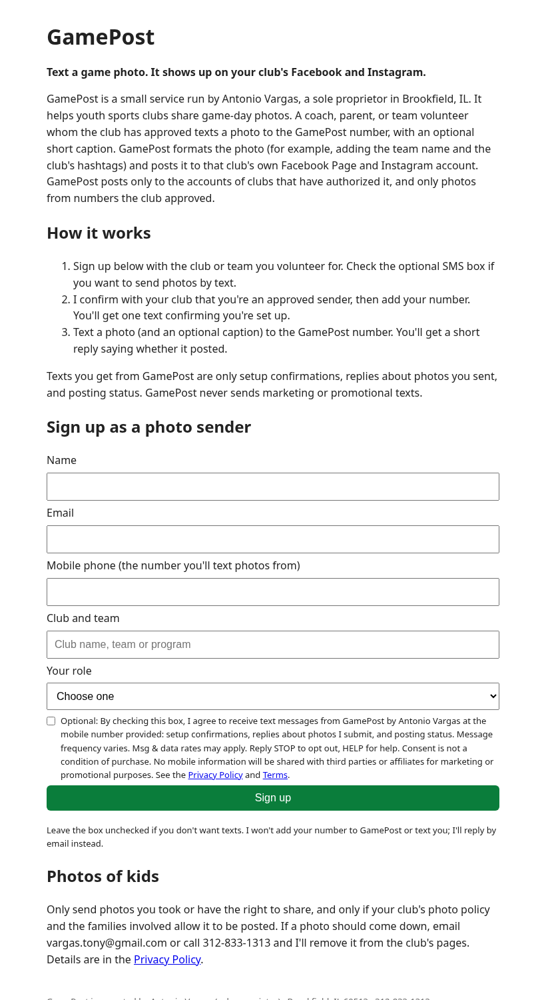
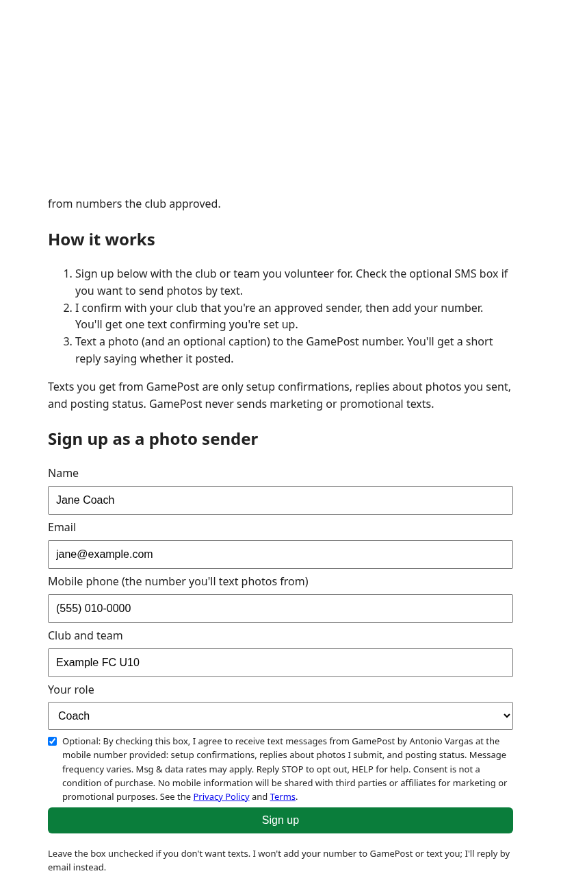
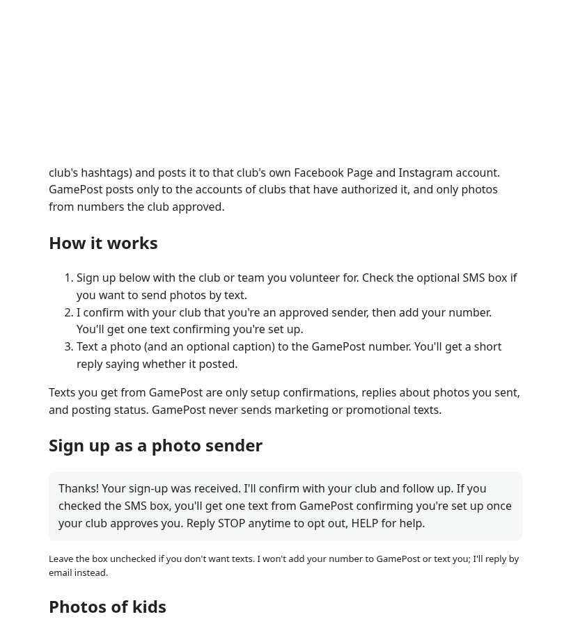

Live form: https://iamantonio.github.io/gamepost-site/ · Privacy Policy · Terms & SMS Terms



After the club approves the sender, GamePost sends one confirmation text: "GamePost by Antonio Vargas: You're set up to send game photos for [Club] [Team]. Text a photo to post it to the club's Facebook & Instagram. Msg frequency varies. Msg & data rates may apply. Reply HELP for help, STOP to opt out."